Журнал про науку та мистецтво в стоматології
«ДентАрт» — ілюстрований міжнародний журнал для лікарів-практиків. Тут ми поступово публікуємо статті номерів онлайн: естетика прямої та непрямої реставрації, ендодонтія, дитяча стоматологія, матеріалознавство, організація практики та інтерв’ю з визначними стоматологами.
«ДентАрт» № 4 (121)
2025 рік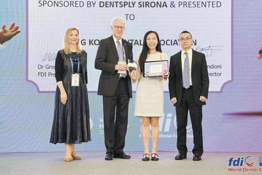
Всесвітня стоматологічна нагорода «Найбільша освітня активність»
Dentsply Sirona і FDI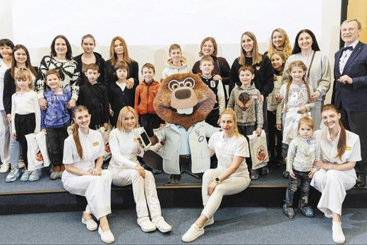
Всесвітній день стоматологічного здоров'я в «Аполлонії»
Редакція «ДентАрту»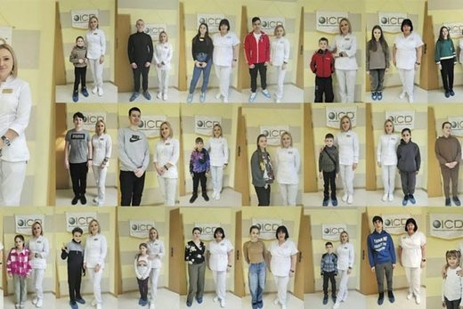
Гуманітарна програма FREE TEETH — «Вільні зуби»
Сергій Радлінський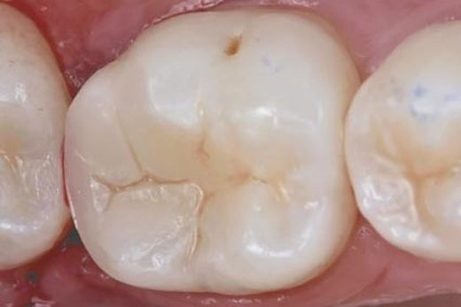
Герметизація, захист, відновлення: стратегія одного візиту з використанням Biodentine і композиту
Вінченцо Тоско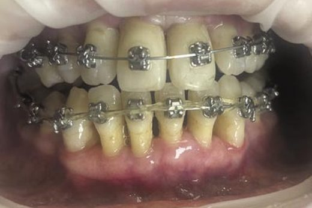
Ортодонтичне лікування пацієнта на тлі комплексної біорегуляційної терапії препаратами TM Heel
Олена Паталаха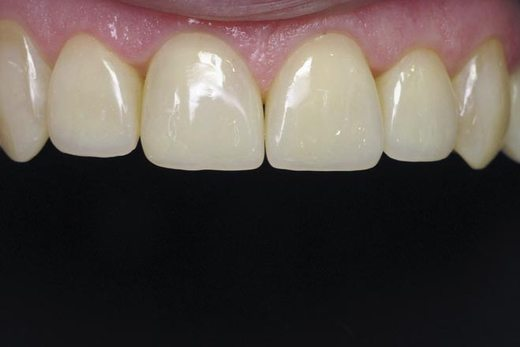
Реконструкція нижніх різців за Золотим коефіцієнтом
Сергій Радлінський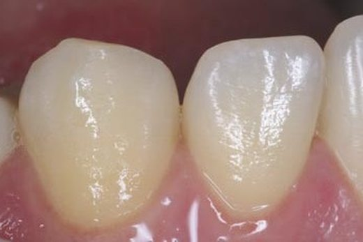
Тимчасова сепарація зубів для мікроінвазивної діагностики і менеджменту карієсу Класу III
Станіслав Самокиш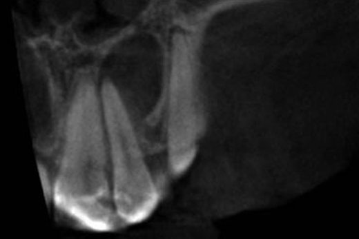
Екструзії в кореневих каналах. Реакція перирадикулярних тканин і можливі ускладнення
Станіслав ГеранінЕфективне управління стоматологічним бізнесом
Віктор Крижановський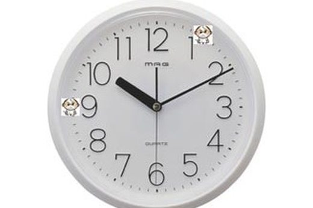
Ергономічні основи стоматологічного прийому
Ольга ГолінкаДоктор Джозеф Кеннілі: «ICD буде визначати „стоматологічні пустелі“ і принесе в ці пустелі воду»
Інтерв'ю · Сергій Радлінський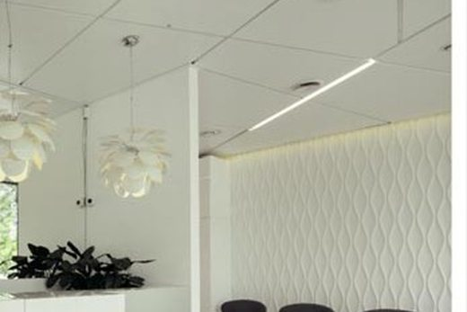
Інтер'єр: стоматологічна клініка Заребських, Варшава
Фотогалерея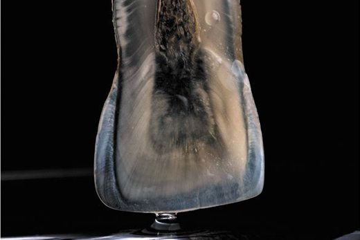
ART у стоматологічному кабінеті. Ольга Шеремета
«Lume Variation № 5»«ДентАрт» № 3 (120)
2025 рік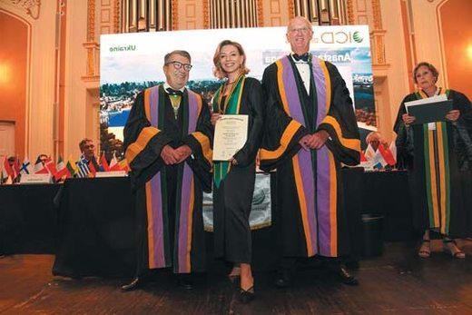
Урочиста Вступна Церемонія Міжнародної Колегії Стоматологів, Зальцбург
Редакція «ДентАрту»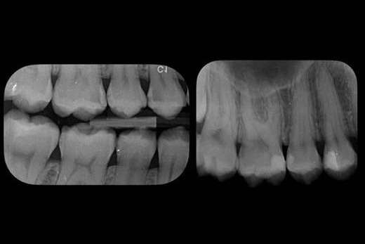
Герметизуйте швидко, лікуйте кмітливо: пряме покриття пульпи за одне відвідування
Анджело Путіньяно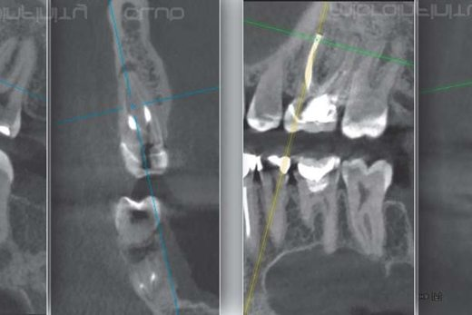
Можливості сучасної ендодонтії. Апікальна хірургія зуба 46
Василь Каращук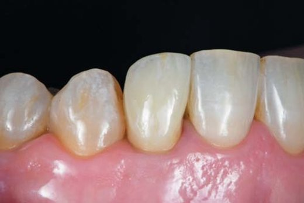
Реставрація бічного різця верхньої щелепи на імплантаті OmniTaper EV з фрикційною фіксацією
Марко Дегіді, Джанлука Сігінольфі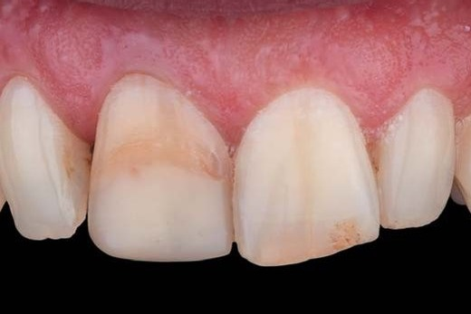
Що у цьому випадку зробили б Ви? Інтеграція одиничної реставрації в зубний ряд
Максим Сергатий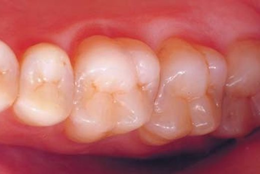
Реконструкція верхніх різців за Золотим коефіцієнтом
Сергій Радлінський, Анна Бодаква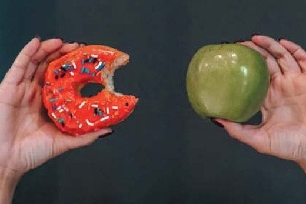
Жування у профілактиці стоматологічних захворювань
Тетяна Петрушанко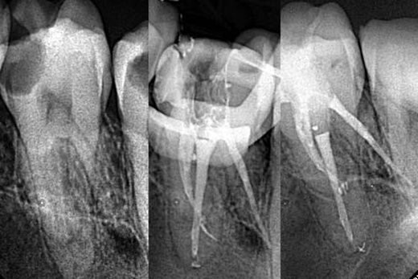
Складнощі в ендодонтії. Огляд клінічних випадків
Антон Пундик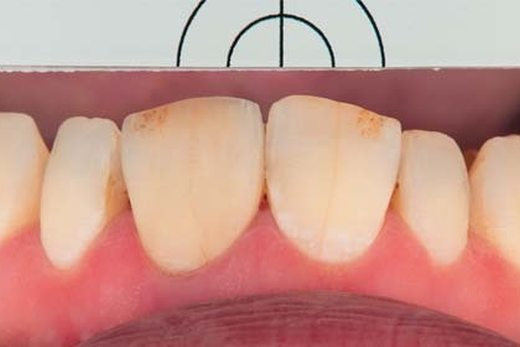
Що у цьому випадку зробив автор? Протокол eLAB для досягнення точної колірної відповідності
Максим Сергатий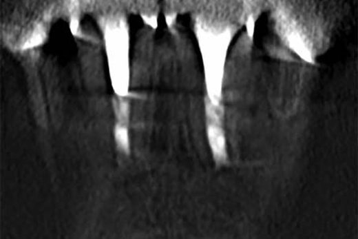
Необхідність диспансерного нагляду за пацієнтами
Наталія ОпанасюкТакі люди, як він, і рухають світ до добра, здоров'я і краси. 100-річчя Евальда Яновича Вареса
Редакція «ДентАрту»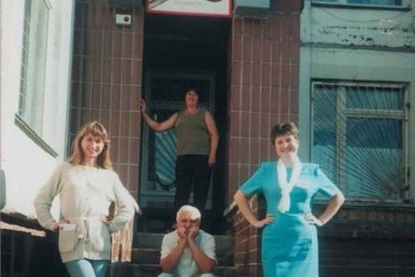
Віктор Крижановський: «Сьогодні я лікую пацієнтів руками лікарів, яким передаю свій досвід»
Інтерв'ю · Сергій Радлінський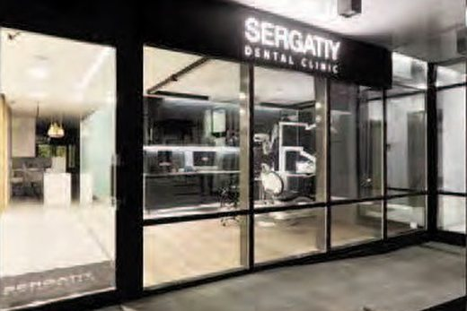
Інтер'єр: стоматологічна клініка SERGATIY DENTAL CLINIC, Київ
Фотогалерея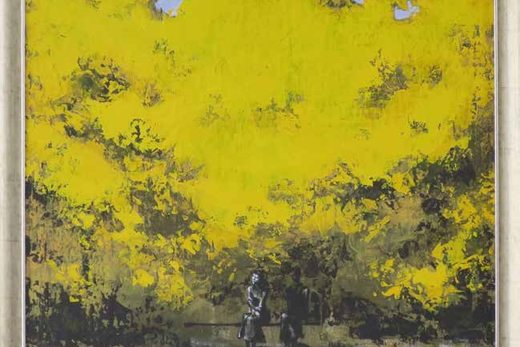
ART у стоматологічному кабінеті. Володимир Радлінський
Картина «Осінь»«ДентАрт» № 2 (119)
2025 рік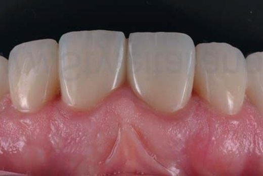
Прогнозована біла і рожева естетика
Стефан Кубі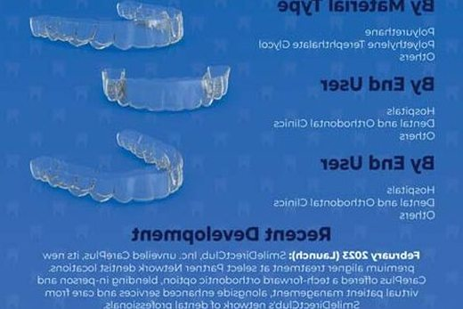
Перспективи адитивного виробництва для власників стоматологічного бізнесу
Віталій Гоголєв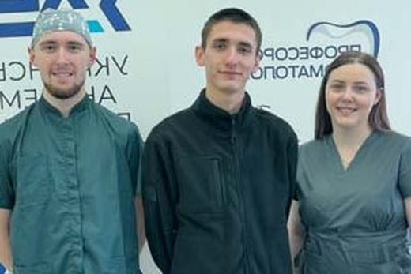
Шлях у світ майстерності: роль професійних конкурсів з художньої реставрації
Ксенія Лазарєва та ін.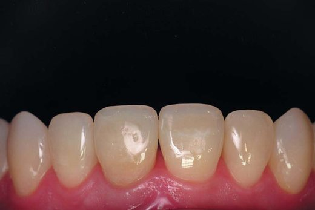
Дисколорит девітального зуба: резекція дентину
Сергій Радлінський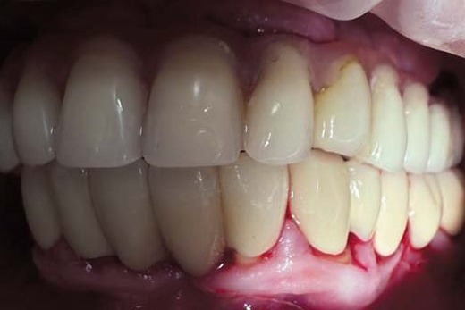
ДНК гігієніста: профілактика периімплантитів
Ольга Кульчицька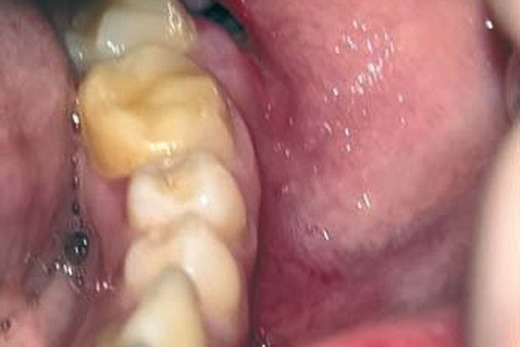
Застосування комплексних біорегуляційних препаратів ТМ Heel у лікуванні альвеоліту
Віталій Поліщук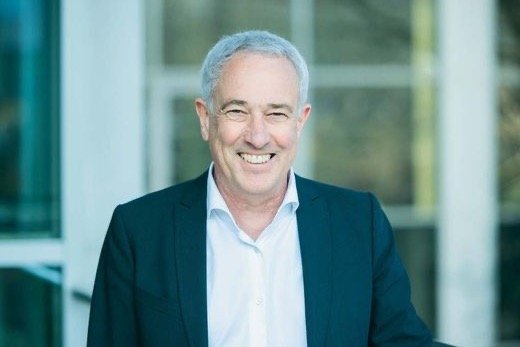
Професор Райнер Зейманн: «Успішна стоматологія можлива лише за умови належного навчання новим технологіям»
Розмовляв Сергій Радлінський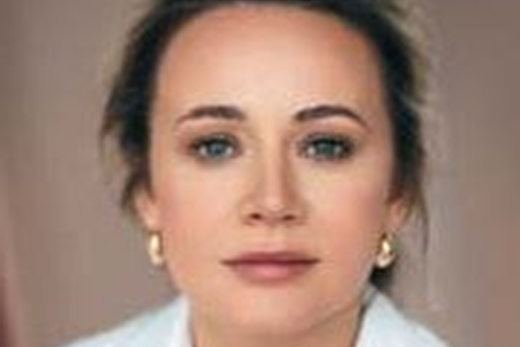
Сучасна тактика лікування герпесвірусної інфекції
Наталія Юнакова, Ігор Федоренко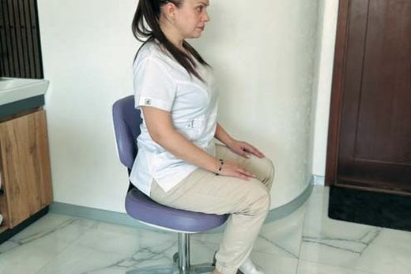
Ергономіка у стоматології: наука, що подовжує професійну діяльність
Ольга Голінка, Юрій Мочалов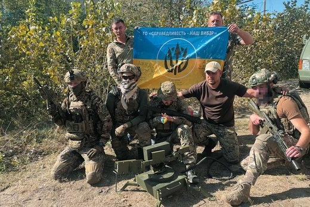
Волонтери і Збройні Сили України — це два крила, а посередині — Перемога!
Михайло Голуб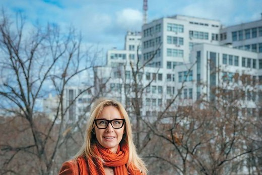
Юлія Черепинська: «Саме тут я відчуваю, що моє життя і моя справа мають глибокий сенс»
Розмовляв Сергій Радлінський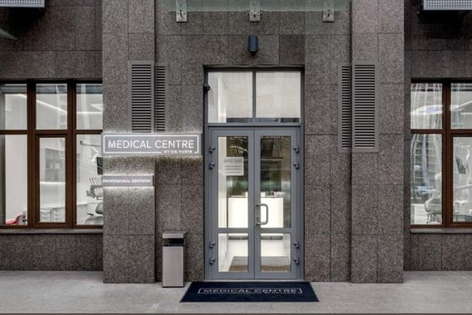
Інтер'єр: стоматологічна клініка MEDICAL CENTRE by Dr. Yurin, Київ
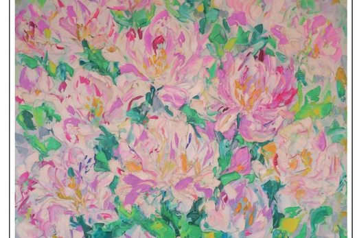
ART у стоматологічному кабінеті. Еріка Свирида, Полтава
«ДентАрт» № 1 (118)
2025 рік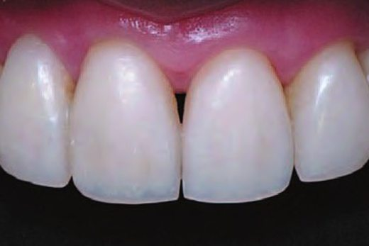
Скловолоконне армування прямих реставрацій
Ольга Пономаренко
Комплексна реабілітація пацієнта з вродженою скелетною аномалією класу ІІІ
Андрій Кущ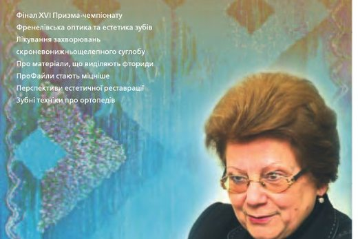
Хай Господь Бог і Свята Аполлонія Вас благословляють, Таїсо Петрівно!
Таїса Скрипнікова, 85-річчя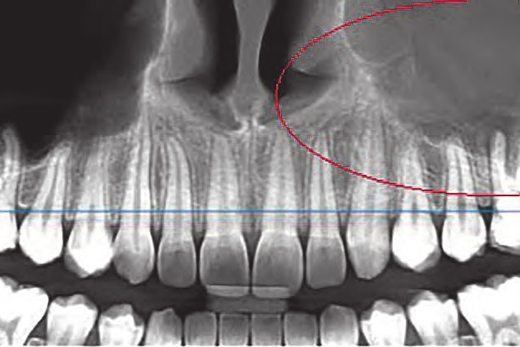
Мультидисциплінарний підхід до лікування хронічних стоматогенних гайморитів
Назар Коцюбайло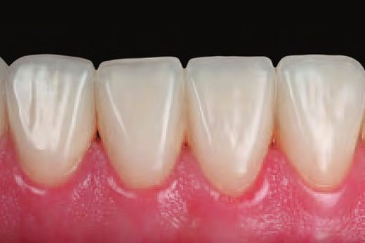
Мультидисциплінарний підхід в естетичній реабілітації
Максим Сергатий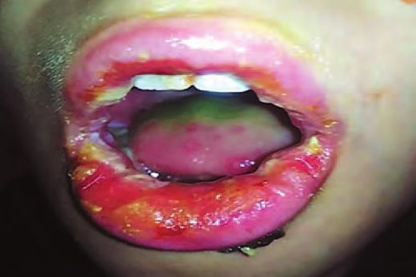
Комплексні біорегуляційні препарати в лікуванні герпесвірусних уражень ротової порожнини у дітей
Олена Мозгова, Ольга Опанасенко, Людмила Вовченко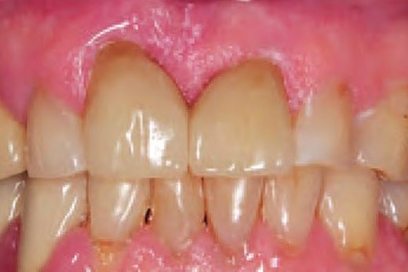
Принципи препарування зубів у біологічно орієнтованій техніці в ортопедичній стоматології
Ігор Ковшар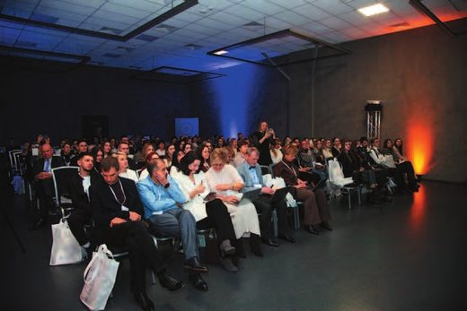
Естетика в стоматології: міфи і реальність
Анна і Юлія Бодаква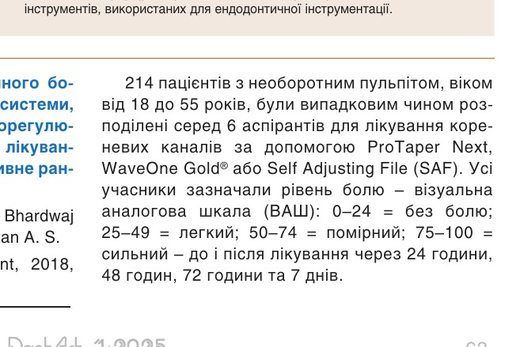
WaveOne® Gold – ендодонтична система нового покоління. Частина 3
Dentsply Sirona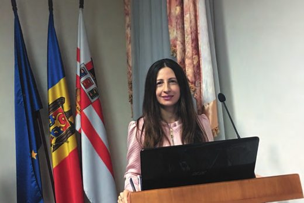
Доктор Діана Ункуца: «Золотий вік стоматології настав!»
Розмовляв Сергій Радлінський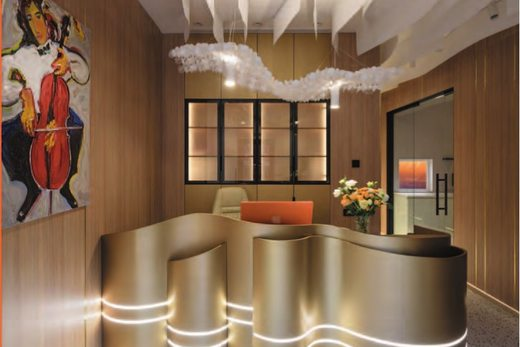
Інтер'єр: стоматологічна клініка Goloborodko Smile Esthetics Center
Київ, Україна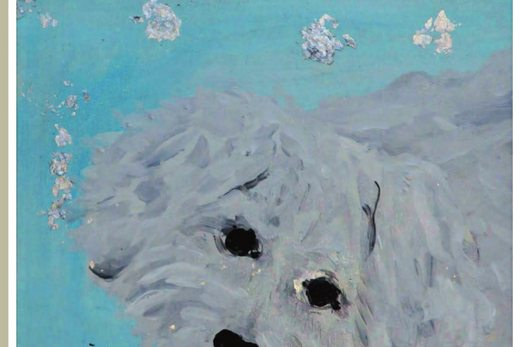
ART у стоматологічному кабінеті. Аліса Радлінська, 11 років
Аліса Радлінська«ДентАрт» № 4 (117)
2024 рік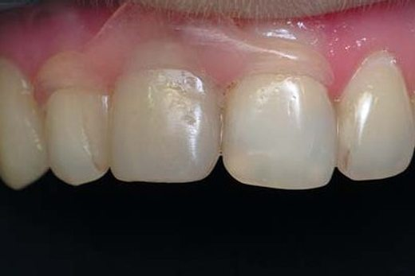
Адгезивні мостоподібні конструкції передніх зубів
Ольга Пономаренко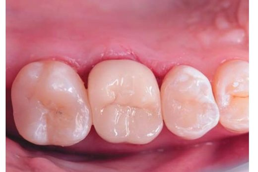
Повсякденна практика ендодонтичного прийому
Антон ПундикВикористання Biodentine для прямих і непрямих реставрацій
Вінченцо ТоскоАльтернативне лікування внутрішньоканальної перфоруючої резорбції
Наталія ОпанасюкАпікальна хірургія як спосіб збереження зубів в естетично важливій зоні
Василь КаращукМінімально інвазивний підхід до усунення білих плям за допомогою Icon
Алі АшрафШляхи запобігання ускладненням у хірургічній стоматології
Максим ЖалдакНегайна реконструкція беззубої верхньої щелепи за допомогою PrimeTaper EV
Міша Кребс, Олександр МюллерWaveOne® Gold – ендодонтична система нового покоління. Частина 2
Dentsply SironaDentsply Sirona удостоєна «Срібного дельфіна» за зворушливий документальний фільм про лікування вроджених щілин
Dentsply SironaПрезидент Асоціації імплантологів України Євген Нєженцев: «Командна робота дає найкращі результати»
Розмовляв Сергій РадлінськийІнтер'єр стоматологічної клініки DANYLIV
Полтава, УкраїнаART у стоматологічному кабінеті. Інга Мухіна
Інга Мухіна«ДентАрт» № 3 (116)
2024 рікМінімально інвазивне лікування хіміко-механічного стирання зубів
Катажина ЗаребськаАпікальна хірургія у повсякденній практиці ендодонтиста
Василь КаращукАутотрансплантація зубів
Ксенія Лазарєва, Владислав Литвин, Олена ГуржійБагатофункціональна полімеризаційна лампа: для інтелектуального робочого процесу під час пломбування
Алессандро ДевігусWaveOne® Gold – ендодонтична система нового покоління
Dentsply SironaСпрощений спосіб «ерозивно-інфільтраційної» техніки
Бунаб АбделькадерSmartLite Pro EndoActivator™. Ендодонтична система активації
Dentsply SironaМіжнародна колегія стоматологів
Церемонія посвяти, Лімасол, 2024Українські лікарі-стоматологи у країнах Європейського Союзу
Анжеліка ЯкимецьКлінічні «маски» герпетичної інфекції
Наталія ЮнаковаДоктор Гаетано Паолоне: «Мені подобаються прямі реставрації, бо вони менш інвазивні»
Розмовляв Сергій РадлінськийІнтер'єр стоматологічної клініки «Mistodent»
Варшава, ПольщаART у стоматологічному кабінеті. Юрій Панкевич
Юрій Панкевич«ДентАрт» № 2 (115)
2024 рікРеставрація зубів зі спецефектом Natural-Bleach
Ольга ПономаренкоГеймченджери для композитних реставрацій бічних зубів
Алан АтласМінімально інвазивний підхід до лікування раннього карієсу і маскування білих плям
Шіраз ХанЛікування рідкісної аномалії – Dens invaginatus
Наталія ОпанасюкТехніка комбінування прямих композитних реставрацій і вінірів
Максим СергатийCучасні тенденції профілактики карієсу у дітей
Галина Солонько, Марія ДолговаТимчасові конструкції як запорука успішного естетичного протезування керамічними вінірами
Едвард ЛіПародонтологічний статус осіб молодого віку з ожирінням
Максим Скрипник, Тетяна ПетрушанкоПостендодонтичне відновлення зубів
Анна МережинськаПрезидент Міжнародної колегії стоматологів Аргіріос Піссіотіс: «ICD має виконувати свою місію за будь-яких обставин!»
Розмовляв Сергій РадлінськийІнтер'єр стоматологічної клініки Шелеста
Київ, УкраїнаART у стоматологічному кабінеті. Євген Курбала
Євген Курбала«ДентАрт» № 1 (114)
2024 рікМотивація, реалізація і розвиток лікарів-інтернів через участь у конкурсах професійної майстерності
Олена Гуржій та ін.«Шлях у світ майстерності» – історія, клінічні настанови, старт для фахового злету
25-річчя конкурсуМультидисциплінарний підхід у реабілітації пацієнта з частковою вторинною адентією та зубощелепною патологією
Ганна Лужковська, Микола Солодовнік, Дмитро КравецьФормування всієї довжини кореневого каналу. Значення, обґрунтування та користь
Кліффорд Раддл, Пьєр Машту, Джон ВестIcon Proximal: покрокове використання
Ахмед ТадфіПозитивне ремоделювання в терапії СНЩС
Костянтин Присяжнюк, Ірина ТокарВідновлення зубів за допомогою вінірів і коронок
Ахмед СаадОрієнтований на майбутнє, цифровий та стійкіший: Dentsply Sirona World у Дубаї 2024
Анна і Юлія БодакваМанор Хас: «Dentsply Sirona World – це місце, де ви бачите нові речі навколо»
Розмовляли Анна і Юлія БодакваТерапевтичний талант: дослідження феномену. Частина II (закінчення)
Наталя Орлова, Євгенія КарлінСвітлана Хлєбас: «Постійно навчайтеся і будьте кращою версією себе!»
Розмовляла Ганна АнтиповичІнтер'єр стоматологічної клініки Solonko Sovyak Dentistry Center, Львів
Solonko Sovyak Dentistry Center, ЛьвівART у стоматологічному кабінеті. Сергій Ступка
Сергій Ступка«ДентАрт» № 4 (113)
2023 рікПідняття глибоких проксимальних країв
Стефан КубіДоступ в ендодонтії
Антон ПундикРеставрація дефектів Класу II: досягнення ефективної естетики
Dentsply SironaВідновлення естетики після ортодонтичного лікування
Максим СергатийКонсервативний підхід до усунення некаріозних уражень емалі з Icon
Ахмед ТадфіФормувальна система Ultimate: 3D очищення та обтурація каналу
Кліффорд РаддлЕргономіка в сучасній ендодонтії. Перфорація зуба 12
Василь Каращук«Стирання зубів» Дідьє Дічі — дружній погляд на істину
Сергій РадлінськийТерапевтичний талант: дослідження феномену
Наталя Орлова, Євгенія КарлінАнжеліка Якимець: «Тільки обмінюючись досвідом, ми можемо створити щось краще»
Інтерв'ю · Анжеліка Якимець«ДентАрт» № 3 (112)
2023 рікВідновлення латеральних різців після ортодонтичного лікування
Максим СергатийАлгоритми відновлення пришийкових дефектів зубів
Олександр КожемякРеконструкція лінії усмішки — консервативна корекція естетики
Ольга ПономаренкоКонференція Міжнародної колегії стоматологів у Молдові
Валеріу ФалаРеставрація дефектів Класу II: важливість, методи та етапи
Dentsply SironaICON — еталон інфільтрації
Шіраз ХанВертикальна фрактура зуба
Василь КаращукСтворення нової усмішки
Ахмед СаадСергій Остафійчук: «…у нас такі Люди і така Країна, і все буде добре!»
Інтерв'ю · Сергій Остафійчук«ДентАрт» № 2 (111)
2023 рікСучасне лікування і ведення пацієнтів зі стиранням зубів
Дідьє ДічіБіоінертні пломбувальні матеріали для лікування верхньощелепних синуситів
Сергій РуденкоНевідкладне лікування перелому моляра
Джуліо ПаволуччіПульпіт чи невралгія? Основні диференційно-діагностичні ознаки
Тетяна Волосовець, Наталія ЮнаковаВідновлення функції та естетики
Ахмед СаадКонтроль болю в ендодонтії
Олег КулигінБіоестетична оцінка і реконструкція: інструменти, правила, етапи і методи
Вольфганг КнупферСлужба кураторів лікування у стоматологічній клініці
Володимир Заїка«ТриЗуб Дентал»: величезні можливості стоматологічної спільноти
Інтерв'ю · Ігор Ященко«ДентАрт» № 1 (110)
2023 рікПамела Марклю (Dentsply Sirona): «Підтримати стоматологів продуктами, інноваціями та освітою»
Інтерв'ю · Dentsply SironaКорекція парафункцій язика у ортодонтичних пацієнтів
Л. Смаглюк, М. Трофименко, С. ПистінаТимчасова коронка невідкладного виготовлення у разі перелому зуба
Джуліо ПаволуччіЗакриття крестальної перфорації текучим композитом
І. Ноєнко, М. Гончарук-Хомин, К. КостураВикривлені канали
Лариса Ладигіна«Шлях у світ майстерності»: XXIV Всеукраїнський конкурс лікарів-стоматологів
Петро Скрипніков та ін.Вітальна терапія пульпи
Антон ПундикЛікування флюорозу інфільтрацією з попереднім відбілюванням
Майкл Віхт, Кристофер ШоппмаєрОбраз Святої Аполлонії у світовому мистецтві
Надія НечитайлоВальтер ван Дрієль (президент Європейської секції ICD): «У центрі уваги — гуманітарні проєкти»
Інтерв'ю · ICD«ДентАрт» № 4 (109)
2022 рікПорівняння ефективності систем охорони здоров'я країн Європи у забезпеченні здоров'я ротової порожнини
Джуліан ВінкельманнПросторові орієнтири в системній реставрації зубів
Сергій РадлінськийНовий погляд на постендореставрацію
Ксенія ЛазарєваНехірургічне перелікування невдалої апікоектомії з апікальним бар'єром MTA
Станіслав ГеранінМаскування білих плям за допомогою Icon
Інго ФранкЛікування вітальної пульпи Biodentine™ при дентальній евагінації
Марк ПархарЕлектроміографія жувальних м'язів при носовому та оральному диханні
Бакрадзе, Вадачкорія, КвачадзеЗдоров'я ротової порожнини і мінеральний комплекс «Мінерол»
Людмила БорисенкоПрофесійне вигорання працівників у медичній установі
Володимир ЗаїкаСтоматологиня і волонтерка Тетяна Бондар
Вітальня · інтерв'ю«ДентАрт» № 3 (108)
2022 рікІсторія одного настінного календаря…
Сергій Радлінський100 років від дня народження професора Павла Максименка
Редакція «ДентАрту»Реставрація за розрахунком: верхні латеральні різці
Сергій РадлінськийКонсервативне лікування флюорозу та усунення білих плям після ортодонтії
Анна СалатВідновлення бічних зубів композитами Neo Spectra ST
Ольга ПономаренкоУніверсальний відтінок композиту A2 для складніших випадків
Алан АтласНепрямі накладки CEREC Tessera за одне відвідування
Йо-Хан ЧойЕстетика тимчасових зубів з використанням цирконієвих коронок
Олена БережнаПричини поломок інструментів та способи їх усунення
Антон ПундикКарієспрофілактична ефективність «Мінеролу»
Оксана Дєньга та ін.Олександр Кириленко: «Після Перемоги відкриються безмежні горизонти»
Розмовляв Сергій Радлінський«ДентАрт» № 2 (107)
2022 рік
Особливості реставрації зубів і зубних рядів
Ольга Пономаренко
Ендодонтичне лікування в епоху пандемії COVID-19
Джуліан Веббер
Реставрація зубів з під’ясенним дефектом
Сергій Радлінський
Естетичне відновлення зубів у дітей
Олена Бережна, Ксенія Лазарєва
Нові матеріали для відновлення естетики і функції стертих зубів
Стефан Кубі
Реставраційні композити на основі скловолокна. Частина 2
Абдул Самад Хан та ін.
Нові умови виписування антибіотиків
Новини
Конфлікти з пацієнтами у медичному закладі
Володимир Заїка
Ігор Федірко: «Кожен повинен під час війни працювати…»
Інтерв’ю · Сергій Радлінський«ДентАрт» № 1 (106)
2022 рікМежа під’ясенного препарування – крок за кроком
Дан ЛазарМіждисциплінарний підхід до лікування одонтогенних верхньощелепних синуситів
Роман Попов, Дмитро БерестАутотрансплантація зубів. Науково обґрунтований підхід
Станіслав ГеранінРеставраційні композити на основі скловолокна. Частина 1
Абдул Самад Хан та ін.Застосування ателоколагену у лікуванні тканин пародонта – пілотне дослідження
Мажена Вигановська-Святковська та ін.Нові виклики у спілкуванні лікар-стоматолог – пацієнт
Олена КлименкоКонсервативна корекція естетики після ортодонтії
Вальтер Девото, Гаетано ПаолонеВячеслав Ждан: «Час висуває нові вимоги до якості підготовки медиків»
Розмовляв Сергій Радлінський«ДентАрт» № 2 (103)
2021 рікЗбереження зубних тканин при стертості зубів. Повний mock-up і цифровий підхід
Стефан КубіРеставрація контактних поверхонь бічних зубів. Частина І
Володимир КолесникBulk-fill-композит і високоміцні волокна у лікуванні тріснутих зубів
Ісайяс Іньїгес, Лайза Іньїгес-СмітКорекція трансверзальних порушень без хірургічних втручань
Михайло СоломонюкОцінка якості прямої реставрації на конкурсі лікарів-інтернів «Шлях у світ майстерності»
Петро Скрипніков та ін.Протокол зняття відтисків для ортодонтичних елайнерів
Томмазо Кастрофлоріо, Габріель РоссініВплив зовнішніх факторів на стабільність кольору композитних реставрацій
Ксенія ЛазарєваСторонні тіла у верхній і нижній щелепах
Максим Скрипник та ін.Про синдром емоційного вигорання. Частина I
Лариса ДахноМедичний менеджмент
Володимир ЗаїкаЖил Алькофорадо: «Удосконаленню у стоматології немає меж!»
Розмовляли Ганна Антипович і Сергій РадлінськийІнтер'єр стоматологічної клініки «Neodenta», Вільнюс, Литва
Стоматологічна клініка «Neodenta», ВільнюсART у стоматологічному кабінеті. Тетяна Кусайло
Тетяна Кусайло«ДентАрт» № 1 (102)
2021 рікПопереднє моделювання – універсальний інструмент у реставрації зубів
Стефан КубіСтоматологічні зонди
Тетяна Петрушанко, Іван Попович, Максим СкрипникЛікування вертикальної різцевої дезоклюзії із застосуванням мікрогвинтів
Михайло СоломонюкПародонтальне шинування поліетиленовою стрічкою Ribbond THM
Говард Е. СтрасслерПотреба вивчення варіативної анатомії та алгоритмів моделювання зубів
Лариса Ломіашвілі та ін.Нові стандарти обробки кореневих каналів зі складним доступом
Роман ПоповПовторне ендодонтичне лікування зубів зі складною анатомією кореневої системи
Антон ПундикБіоморфологічні закони та закономірності в розвитку і будові ЗЩЛС людини. Частина II (закінчення)
Олександр ПостолакіНаталія Біденко: «Стоматологія так само безмежна, як і світ»
Розмовляв Сергій РадлінськийІнтер'єр стоматологічної клініки «l'identité», Вільнюс, Литва
Стоматологічна клініка «l'identité», ВільнюсART у стоматологічному кабінеті. Лариса Лукаш
Лариса Лукаш«ДентАрт» № 4 (101)
2020 рікЛюбов Смаглюк: «Бачу ортодонтію флагманом у збереженні загального здоров’я людини»
Сергій РадлінськийБіоморфологічні закони в розвитку і будові зубощелепно-лицьової системи. Частина II
Олександр ПостолакіЕстетична реабілітація зубів, змінених у кольорі
Дмитро Нелєпа«Українська наукова стоматологічна школа: історичні нариси»
Асоціація стоматологів УкраїниТріщини і переломи зубів
Максим СкрипникПрогнозована біла і рожева естетика
Стефан КубіЕстетична реставрація передніх зубів з непрямими композитними вінірами
Вальтер ДевотоМостоподібний протез із власного зуба, армований волоконною стрічкою
Говард Е. СтрасслерКупірування больового синдрому препаратом Кеторол Експрес
Є. Анісімова та співавтори«ДентАрт» № 3 (100)
2020 рікПряма реставрація в реконструкції усмішки: поєднання нових технологій і майстерності
Дідьє ДічіВідновлення зуба з поздовжнім розколом
Сергій РадлінськийПрогнозування витривалості зубів у хворих на генералізований пародонтит
Тетяна Петрушанко та ін.Усунення білих уражень за допомогою інфільтрації смолою
Лінда ГрінволлРеставрація зубів з Bleach-ефектом — затребуваний тренд в естетичній стоматології
Ольга ПономаренкоФіксація непрямих реставрацій
Роман ПоповВідновлення зламаного верхнього різця шляхом приклеювання фрагмента
Гергана ТрифоноваОбґрунтування вибору ортодонтичного лікування з видаленням зубів
Михайло СоломонюкНародження «ДентАрту» було відповіддю на потребу української стоматології стати справді сучасною
Сергій Радлінський«ДентАрт» № 2 (99)
2020 рікЗапобігання інфекціям, зокрема SARS-CoV-2, на стоматологічному прийомі
Петро Скрипніков та ін.Алгоритм фотографування у процесі моделювання зубів
Лариса Ломіашвілі та ін.Ендопереліковування з передендодонтичним відновленням зубних тканин
Антон ПундикТактика щодо нижніх третіх молярів при остеотомії нижньої щелепи
Андрій Андреїщев та ін.Попереднє відновлення композитом бічних зубів для непрямих реставрацій
Джуліо ПаволуччіСучасні адгезивні техніки
Лариса ЛадигінаКомбінована методика закриття пародонтального дефекту (Емдогейн і гіалуронова кислота)
Ганна ВишневськаБіоморфологічні закони в розвитку зубощелепно-лицьової системи. Частина I
Олександр ПостолакіАкіра Сенда: «У всіх нас є універсальне завдання — сприяти здоров'ю людства»
Інтерв'ю · Акіра Сенда«ДентАрт» № 1 (98)
2020 рікДантист, який став батьком сучасної наукової стоматології
Еміль АгаджанянПрофесор Таїса Скрипнікова — талант передавати знання іншим
Редакція «ДентАрту»Перспективи повної ліквідації карієсу зубів і хвороб періодонту
Петро ЛеусСучасний підхід до відновлення передніх зубів з фрактурою
Володимир КолесникЗастосування цифрових протоколів у повсякденній практиці
Владислав Толкачов, Євген ГрязінЯк підвищити самооцінку, створивши нову усмішку?
Грегорі КамалеонтеВивчення площі оклюзійної поверхні зубів при реконструктивній терапії
Лариса Ломіашвілі та ін.Як обрати інструменти для ендодонтичного лікування
Лариса ЛадигінаЗдоров'я стоматолога: первинна профілактика
Тетяна ПетрушанкоЩоб клініка була успішною
Габріель АсулінРотове дихання, аномалії прикусу і відновлення носового дихання
Дерек Махоні, Роджер ПрайсБетті МакКейг: «Стоматологія дарує більше радості, коли ми ділимося досвідом»
Інтерв'ю · Бетті МакКейг«ДентАрт» № 4 (97)
2019 рікОцінка динаміки мінералізації емалі за проявом дифракції Фраунгофера
Володимир ГрісімовЕтапна оклюзійна реабілітація. Композитний протокол
Станіслав БлумЕстетична реставрація девітальних зубів. Лекторій Української академії естетичної стоматології
Геранін, Радлінський, ПешкоЛікування рецесії ясен у зоні переднього зуба нижньої щелепи
Емілія БордеШвидкість без втрати якості при відновленні контактів бічних зубів
Ксенія ЛазарєваЛікування аномалії оклюзії класу III із застосуванням мікрогвинтів
Михайло Соломонюк5-й Національний український стоматологічний конгрес: ретроспектива і план дій на майбутнє
За матеріалами пострелізу АСУМіжнародна колегія стоматологів (ICD)
Оксана Дєньга та редакціяВнутрішня резорбція кореня – шанс чи вирок?
Ксенія КрутовськаЯрослав Заблоцький: «Працювати треба так, щоб цінність вашого продукту набагато перевищувала його вартість»
Інтерв'ю · Ярослав Заблоцький«ДентАрт» № 3 (96)
2019 рікЕкструзії в кореневих каналах. Реакція перирадикулярних тканин та можливі ускладнення
Станіслав ГеранінШлях до ультраконсервативної стоматології – відбілювання, інфільтрація, реставрація
Анна СалатСистемна реновація реставрованих зубів. Нижні зуби
Сергій РадлінськийЛікування аномалії оклюзії класу II при вертикальному типі росту щелеп із застосуванням мікрогвинтів
Михайло СоломонюкАдгезивні системи стоматологові-практику. Частина І
Роман ПоповЕргономічна робота стоматолога – вирішення проблеми
Санна ХакалаОрганізація відділення стерилізації інструментів у стоматологічній клініці
Юрій ДемидовМетоди визначення кольору зубів
Григорій ФлейшерАндрій Пешко: «В Україні багато класних фахівців в естетичній стоматології, і це чудово!»
Інтерв'ю · Андрій Пешко«ДентАрт» № 2 (95)
2019 рікОртодонтичне лікування бімаксилярної протрузії із застосуванням мікрогвинтів
Михайло СоломонюкСистемна реновація реставрованих зубів. Верхні зуби
Сергій РадлінськийСтандартні коронки у практиці дитячого стоматолога
Олена Бережна, Петро Скрипніков, Людмила КаськоваРеставрація контактних поверхонь передніх зубів
Ксенія ЛазарєваНова лінія Lunos — оптимальна профілактика
Андрій РенцФотодинамічна терапія у практиці лікаря-стоматолога
Ольга Рисована, Заріна ЛалієваРозумний рот як показник здоров’я організму
Григорій ФлейшерСергій Радлінський: «Стоматологія майбутнього – чим здоровіші зуби пацієнта, тим краще стоматологові!»
Інтерв'ю · Сергій Радлінський«ДентАрт» № 1 (94)
2019 рікБезпрепарувальна превентивна реабілітація зубів при стиранні
Дідьє ДічіЗубна щітка: від альфи до омеги
Ярослава ДубинякСпеціальні ефекти в реставрації зубів. Частина II
Ольга ПономаренкоКомп’ютерна геометрична морфометрія бічних зубів
Олександр ПостолакіНа одній хвилі зі світом: класифікація ендодонтичної патології
Денис ПодільчукРецесія ясен. Комплексний міждисциплінарний підхід
Ольга ЧепурковаПричини розвитку дисколориту зубів
Григорій ФлейшерІрина Мазур: «Формула успіху – реформувати, не руйнуючи»
Сергій Радлінський«ДентАрт» № 4 (93)
2018 рікШвидкі одноколірні реставрації передніх зубів з текучим композитом. Штамп техніка 2.0
Джузеппе МаркеттіЛікування вогнищ проксимального карієсу (дослідження типу «split-mouth design»)
Андреас ШультСучасні вимоги до естетики керамічних реставрацій. Успіх планування і реалізації
Владислав ТолкачовРоль ендодонтії у плануванні естетики
Василь КаращукАдгезивні мостоподібні конструкції бічних зубів
Ольга ПономаренкоВіддалені результати естетичного відновлення тимчасових зубів стандартними коронками з оксиду цирконію
Тетяна ПешкоСтоматологія Білорусі і України: перспективи досягнення європейського рівня
Петро ЛеусПогана гігієна ротової порожнини – проблема ХХІ століття
Ярослава ДубинякМорфоархітектоніка оклюзійних і проксимальних поверхонь перших постійних молярів. Частина VI
Олександр ПостолакіПрофесор Кетеван Гогілашвілі: «У стоматологічному світі сьогодні дуже велика конкуренція, але всі висоти досяжні!»
Інтерв'ю · Ганна Антипович«ДентАрт» № 3 (92)
2018 рікВініри: поетапний клінічний протокол, особливості виготовлення тимчасових реставрацій
Джуліо ПаволуччіСпеціальні ефекти у реставрації зубів. Частина 1
Сергій ПономаренкоРеставрація бічних зубів з використанням нанокерамічного композиту Ceram.X SphereTEC One
Піт ван дер ВіверПрофілактика підвищеного рівня блювотного рефлексу при проведенні стоматологічних маніпуляцій
Григорій ФлейшерМорфоархітектоніка оклюзійних і проксимальних поверхонь перших постійних молярів. Частина V
Олександр ПостолакіНовий формат ведення стоматологічної документації
Олена Бережна, Ярослав СоломійчукПрофесор Петро Леус: «Комунальні програми мають передбачати первинну профілактику карієсу і раннє лікування»
Інтерв'ю · Ганна Антипович«ДентАрт» № 2 (91)
2018 рікКорекція фронтального нахилу оклюзійної площини із застосуванням мікрогвинтів
Михайло СоломонюкВидалення білих плям і відновлення об'єму
Грегорі КамалеонтеСмуги Гунтера – Шрегера: архітектоніка емалі і закон збереження енергії
Володимир ГрісімовСинхроміографія у системному відновленні оклюзії
Сергій РадлінськийБіоміметична техніка реставрації передніх зубів CeramX One SphereTEC
Ксенія ЛазарєваМіжнародний день стоматолога 2018
Ганна АнтиповичХрвоє Старчевич: «Найважливіше у стоматології – зробити так, щоб пацієнти були щасливими»
Інтерв'ю · Ганна Антипович«ДентАрт» № 1 (90)
2018 рікМоделювання зубів: від простого до складного
Лариса Ломіашвілі, Дмитро Погадаєв, Сергій МихайловськийЗаключне слово на III конгресі Української академії естетичної стоматології
Девід КлаффФілософія ортотропії
Ольга КозикКлінічне застосування системи Easybite
Олексій КрасножонАдаптація матриці при проксимальних дефектах за відсутності зуба попереду/позаду
Роман ТурецькийВиготовлення індивідуальної напівпостійної реставрації
Даніель ФарханЛікування дистальної оклюзії із застосуванням мікрогвинтів
Михайло Соломонюк, Айнур ЄржановаРоль ультразвукової системи Vector Paro у комплексному лікуванні захворювань пародонту
Тамара Модіна, Вікторія РаєвськаФункціональний протез і електронна реєстрація прикусу
Інтерв'ю · Штефан ВайеНормалізація центральної позиції нижньої щелепи за патологічного стирання зубів
Олексій КоритнюкАнатомо-морфологічні особливості міжзубних контактних поверхонь. Частина IV
Олександр ПостолакіВальтер Діас: «Стоматологія, яка робить життя пацієнтів кращим, дарує багато щастя»
Сергій Радлінський«ДентАрт» № 4 (89)
2017 рікКомпозитні вкладки і накладки при відновленні бічних зубів
Джузеппе МарчеттіОптико-морфологічні особливості електропровідних зон дентину
Володимир ГрісімовЧисте і сухе повітря – запорука здоров'я і високої якості лікування
Андрій РенцСтертість зубів: концепція повного макетування
Стефан КоубіЗапорука успіху реставрації зубів, або Правило трьох візитів
Дмитро НеліпаЄвропейський день здорових ясен в Україні – 2017
Галина Білоклицька, Оксана Копчак та ін.Фотодинамічна терапія у пародонтології
Адріана БарилякДвочастинні стільці-сідла для стоматологів
Марі ЯлканенНаркоз чи седація в стоматології: відмінності і переваги
Олександр Лихопуд, Олена Бережна та ін.Документація у стоматологічній клініці: помилки коштують надто дорого
Олександр ГришаковАнатомо-морфологічні особливості міжзубних контактних поверхонь. Частина III
Олександр ПостолакіУкраїнська академія дитячої стоматології: одна команда, одна мета, одна пристрасть
Катерина Гераніна, Дарина ТолкачоваІнтер'єр стоматологічної клініки «S&T Dent»
Харків, УкраїнаART у стоматологічному кабінеті
Андрій Шустов«ДентАрт» № 3 (88)
2017 рікВикористання Закису Азоту Кисневої Седації (ЗАКС) на дорослому і дитячому прийомі
Дарина Толкачова, Віталій ПчельникНевідкладні стани на стоматологічному прийомі. Частина І. А чи знаєте ви, коли і як користуватися дефібрилятором?
Тарас ГородецькийКонусно-променева комп'ютерна томографія і 3D-цефалометрія: метод вивчення черепно-щелепно-лицьових деформацій
Лариса ДахноЕстетика усмішки малоінвазивним методом
Христина ШуткаТехніка знебарвлювання твердих тканин зубів
Станіслав ГеранінЕстетична реставрація у стоматології дитячого віку
Ольга БойчукПряме нанесення Biodentine™ під непрямі керамічні реставрації
Крістіна Бутсіукі, Космос Толідіс, Паріс ГерасимуОбґрунтування методів профілактики карієсу в районах ендемічного флюорозу зубів
Петро Леус«Здорова усмішка наших дітей» – проект, що приніс радість і стоматологам, і пацієнтам
Ірина Трубка та колектив авторівМолярно-різцева гіпомінералізація: задача з кількома невідомими. Частина II
Наталія Біденко, Світлана ЛюбарецьРектор ТДМУ Зураб Вадачкоріа: «Наш університет успішно проходить шлях гармонізації навчального процесу з європейськими стандартами»
Інтерв'ю · Ганна АнтиповичІнтер'єр стоматологічної клініки «Назарія»
Стоматологічна клініка «Назарія», ЧеркасиART у стоматологічному кабінеті
Гела Пілаурі«ДентАрт» № 2 (87)
2017 рікВизначення нейром'язової фізіологічної оклюзії за допомогою черезшкірної електронейростимуляції
Костянтин Ронкін, Оксана НікітінаАгресивний пародонтит. Частина I
Юлія ЧерепинськаВідбиткові матеріали для непрямої реставрації передніх зубів. Технологія Snap-set
Ден Лазар...чи не пора переосмислити Естетичну Стоматологію?
Дідьє ДiчiАдгезивні мостоподібні конструкції передніх зубів
Ольга ПономаренкоЗастосування засобів гігієни для запобігання карієсу та захворюванням пародонту у осіб молодого віку
Світлана Блашкова, Марина Мартьянова5 «популярних» помилок адміністраторів комерційних клінік, які приймають вхідні дзвінки пацієнтів
Ольга ПетроваАнатомо-морфологічні особливості міжзубних контактних поверхонь. Частина ІI
Олександр ПостолакіАндреас Курбад: «Не хочу бути просто користувачем цифрових технологій, їх розвиток — мій інтерес»
Інтерв'ю · Сергій РадлінськийІнтер'єр стоматологічної клініки «Amati»
Стоматологічна клініка «Amati», ПрагаART у стоматологічному кабінеті
Анна Владимирова-Лаврова«ДентАрт» № 1 (86)
2017 рікЛікування періімплантиту
Юрій ГуцалюкПринципи модульного відновлення зубів
Лариса Ломіашвілі, Сергій Михайловський, Дмитро ПогадаєвМолярно-різцева гіпомінералізація: завдання з кількома невідомими. Частина I
Наталія Біденко, Світлана ЛюбарецьПряма реставрація проти непрямої
Денис КрутіковПро труднощі діагностики карієсу, цифровий рентген і перехід на рентгенографічні пластини
Крістоф ВерхаймЗастосування діодного лазера 940 μm у пацієнтів з хронічним генералізованим пародонтитом
Юлія ЧерепинськаПрофілактика поломок машинних ендодонтичних інструментів
Роман ПоповЕфективність місцевої анестезії при ендодонтичному лікуванні
Петер РафтеріБазові аспекти сервісу у стоматологічній клініці
Микола РадлінськийНейром'язова фізіологічна концепція у стоматології
Костянтин Ронкін, Оксана НікітінаАнатомо-морфологічні особливості міжзубних контактних поверхонь. Частина I
Олександр ПостолакіКомфортне світло лікареві-стоматологу
Віола МедтехнікаНевтомна трудівниця на ниві охорони дитячого стоматологічного здоров'я
Редакція «ДентАрту»Міхаель Хагер: «Уміти дивитися в майбутнє і робити його сьогоденням»
Інтерв'ю · Сергій РадлінськийПро журнал. «ДентАрт» видається з 1995 року і став першим в Україні фаховим стоматологічним журналом, який поєднав науку, клінічну практику та естетику. Нові номери переносимо в онлайн поступово — стежте за оновленнями цієї сторінки.